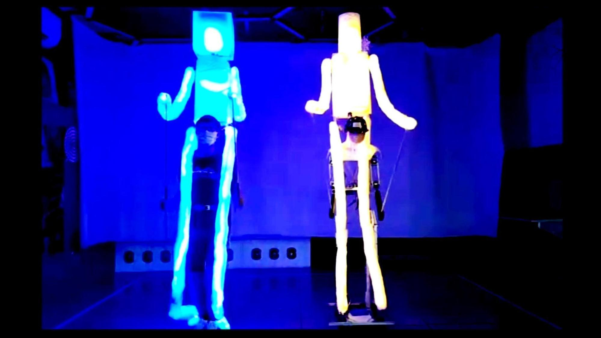
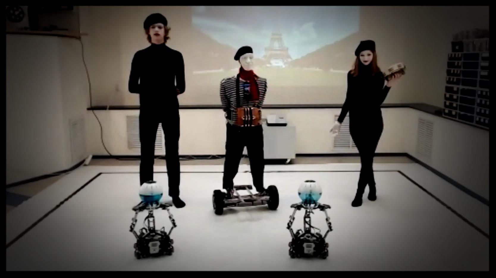

These are the official rules for the RoboCupJunior OnStage events in 2024.
They apply to both an on-site competition, as well as an online (virtual) or hybrid event. Teams will be informed in advance about how each element will be held.
Special rules for on-site competitions are highlighted in blue while virtual elements are highlighted in green. Sections with no highlighting apply to every kind of competition.
Major changes from the 2023 OnStage rules are written in red.
Teams should make sure to review ALL the pages of these rules. The rules have been changed to deepen and broaden the educational benefits of competing in RoboCupJunior. It focuses on the evolving technologies available in our time.
The International Original Rules (in English) have priority over any translations. These rules are the official rules of the RoboCup Federation.
The rules, score sheets, and all forms of documentation can be downloaded from the official RoboCupJunior website (https://junior.robocup.org). Each team has a responsibility to verify the latest version of these documents prior to the competition, as changes may be made at any moment. Teams are encouraged to study all documents in detail.
RoboCupJunior Forum
For inquiries and questions about the rules or competition updates, the Official RoboCupJunior forum (https://junior.forum.robocup.org/) can be used to contact the OnStage League Committee. All official communication from the committee will be published here before and during the competition season.
1. Overview
RoboCupJunior OnStage invites teams to design, build and program creative and autonomous physical robots. The objective is to create either a live or streamed, robotic performance that uses a wide variety of technology to engage an audience. This includes a range of possible performances, such as dance, storytelling, theater, or art installations. The performance may involve music, but this is optional. The league is intended to be open-ended. Teams are encouraged to be creative, innovative, and entertaining, in both the design of the robots and in the design of the overall performance.
An OnStage performance should make use of innovative technologies or use technology in new innovative ways not previously developed in OnStage performances, while adding value to the performance. Innovation can be achieved with clear evidence of testing, research and development and can be an inspiration for future competitors.
An OnStage Performance must showcase the implementation and integration of robotic features in ways that visually enhance or add value and contribute to the theme or story being portrayed.
During the International RoboCupJunior OnStage Competition, teams also take part in a SuperTeam Challenge. The SuperTeam Challenge is a robotic performance created by a group of two or more cooperating teams from different regions. The SuperTeams spend a short period of time for the collaborative performance creation. More details will be released before the International RoboCupJunior competition on the official website.
From 2021 onwards, there will be no sub-leagues in RoboCupJunior OnStage.
 
2. Judging Overview
All teams are judged in the following areas: a Technical Description Poster, Technical Demonstration Video, Technical Interview, and an OnStage Performance. Teams must highlight four of their robot(s) features in the work they present to the judges. Ask the following question - “What do we believe are our best system/sensor integration, electromechanical design, interaction, or software solutions implemented on their robot(s)?” The aim should be to present how the chosen features are integrated to enhance the quality of the performance in unique and innovative ways. Examples of features include, but are not limited to:
-
Locomotion
-
Object/human detection and avoidance
-
Human, robot and/or prop interaction
-
Manipulation (grabbing/grasping)
-
Visual/audio recognition
-
Localization and mapping
Teams should describe and provide reasoning for their four chosen features in the Technical Description Poster and during their Technical Demonstration Video, before being judged on the implementation of these features during the Performance. In addition, teams should demonstrate their understanding of their systems in the Technical Interview.
For clarification on a teams’ features, please do not hesitate to reach out to the OnStage League committee using the RoboCupJunior Forum.
3. General
It is the responsibility of the participating team(s) and regional representatives to verify the participants' eligibility requirements, which are as follows:
3.1. Team Size & Membership
Each team must have 2 to 5 members. Each team member needs to carry a technical role within the team, such as Electrical, Mechanical, Software etc. Each participant can join only one team. No members can be shared between teams and/or leagues.
3.2. Age requirement
All team members must be aged 14 to 19 years old (ages as of 1st of July).
All RoboCupJunior OnStage Teams must also comply with the RoboCupJunior General Rules which can be found at: https://junior.robocup.org/robocupjunior-general-rules/
4. OnStage Performance (40% of total score)
The OnStage Performance is an opportunity to demonstrate the design, construction, and technical aspects of the robot(s) through a performance or stage show. For example, this could be a magic show, theater performance, story, comedy show, dance, or art installation. Teams are encouraged to be creative, innovative and take risks in their use of technology and materials when creating their performances.
Teams will present a live performance, in which their routine will be judged. Teams will present and demonstrate the four features to be judged, and higher marks will be awarded for the integration of these features and the value that they add to the performance. For more details on this, refer to the OnStage Performance Score Sheet. Teams must show originality, creativity and innovation throughout their performance routine. It is expected that all participating teams perform their best.
4.1. Judging
Teams have up to two opportunities to perform before the judges. If more than one performance is scheduled, the highest score from each performance will be used. The top-scoring teams may be invited to perform again in a final competition.
The stage performance will be judged by a panel of at least three officials. At least one of these judges is a RoboCupJunior official who has judged the Technical Interview as well.
4.2. Stage performance
Teams have up to two opportunities to perform before the judges.
The duration of the performance routine must be no less than 1:30 minutes.
Each team has a total of seven minutes on the stage. This time includes stage set-up, introduction, and performance routine, including any re-starts due to factors under the team’s control, and the time for packing up and clearing the stage. The timer only stops when the entire stage is clear with no remnants from the previous performance.
When a team is asked to come onto the stage, a RoboCupJunior official starts the timer.
If the time limit is exceeded due to circumstances outside the team’s control (for example problems with starting the music) there will be no penalty. The judges have the final say on any time penalties.
Teams wait on the side of the stage before being welcomed on stage. A technician designated by RoboCupJunior officials will start the music and the audiovisual / multimedia presentation for the performance routine.
Teams are required to join the “Backstage Pit” of an online platform, which will allow them to test their AV and streaming connections. Teams will then be moved to the main performance “stage” for the commencement of their live performance. Teams start the music for the performance routine once on the “stage”.
Performances will not be live-streamed for general public viewing. Recordings will be edited and released onto the RoboCupJunior OnStage YouTube channel. Teams have an option to request not to publish the recording of their performance if they wish.
Teams are strongly encouraged to use the time while they are setting up on the stage to introduce to the audience the performance and the features of their robots.
Teams must indicate the start of their performance clearly with a “3-2-1" countdown to the judges.
Teams must indicate the end of their performance clearly once it’s over (e.g. everyone coming to the front of the stage / thanking the audience for their attention / …).
4.3. Restarts
Teams can restart their routine if necessary, at the discretion of the judges. There is no limit on the number of restarts allowed within the stage-time. Penalty marks will be deducted from the score.
The team must leave the stage after their time on stage has expired.
4.4. Music and Multimedia presentations
Teams may use music or video to complement their performance. The music should start at the beginning of the performance with a few seconds of silent lead-time.
If a team uses copyrighted music, they should follow the Copyright Law of the region where the event is held.
Teams are encouraged to provide a visual or multimedia presentation as part of their performance. This can take the form of a video, animation, slideshow, etc. However, the content should be made by the team themselves.
Interaction between the robots and the visual display is allowed and encouraged.
During on-site presentations, a projector and screen or LED screen is provided. The organizers cannot guarantee the height above the stage or the size of the screen.
A HDMI and 3.5 mm AUX cable is available on stage through which a laptop or other device can be connected to the display device. The length of the cable cannot be guaranteed.
If music is used, teams must provide their own audio music source. The preferred transport method is to place the sound or video file on a memory stick as an MP3/MP4 file. The memory stick should be clearly labeled with the team’s name and should hold only the required files. It is essential that the music be given to a sound technician or a RoboCupJunior official on the competition setup day. Teams are encouraged to bring multiple copies of the audio source file.
Teams may screen share their audio and video through their computers but must inform the judges of their additional screen sharing requirements before starting their performance. Teams are responsible for starting their multimedia presentations from their shared computer but are reminded that the robotic performance should be the main attraction.
4.5. Stage
4.5.1. Virtual teams
The size of the performance stage area is up to the discretion of the teams. The performance area must be visible in the camera’s field of view. However, the maximum size of the performance stage area is a rectangular area of 5 x 4 meters (m) for robots with the 5 meter side facing the judges.
The judging camera, which shows the entire view of the performing area must be set up as a static camera and should be placed in approximately the position of the judge’s table at an in-person competition. See Appendix A.
Teams can use a second camera to show details of their robots during the performance. However, they should be aware that additional views may detract from the overall performance. Judges must be informed before the start of the performance where the additional camera(s) will be placed so the correct screen can be pinned during the performance.
4.5.2. On-Site teams
The size of the performance stage area is a rectangular area of 5 x 4 meters (m) for robots with the 5 meter side facing the judges.
There is a line marking the edge of the 5 x 4 meter stage. See Appendix A.
The floor provided shall be made of a flat (non-glossy) white surface, for example, painted MDF (compressed wood fiber). While floor joints will be made to be as smooth as possible, robots must be prepared for irregularities of up to 5 mm in the floor surface. Whilst every effort will be made to make the stage flat, this may not be possible, and teams should be prepared to cope with this uncertainty.
Teams should come prepared to calibrate their robots based on the lighting conditions at the venue.
Teams using compass sensors should be aware that metal components of the staging may affect the compass sensor readings. Teams should come prepared to calibrate such sensors.
4.6. Robots
Robots must perform autonomously.
Laptops, notebooks, mobile phones, tablets, Raspberry Pi, and other similar devices can be used as robotic controllers.
Teams should construct their own robot rather than using the instructions that come with a commercial kit. Teams are encouraged to design their robot appearance by themselves. If a team wants to use a famous character as their robot, the team should pay attention to the copyright of the character.
A team may have and use any number of robots. Robots may be of any size. However, using multiple robots does not necessarily result in obtaining higher points. Large robots do not count for more.
4.7. Communication and Localization
Teams are encouraged to design their robots to interact with a communication function. Robots are encouraged to communicate with each other during the performance. Suggested and allowed communication protocols are infrared (IR), Bluetooth (LE and classic), ZigBee, or other localization platforms.
There must be no communication between off-stage and on-stage devices.
It is the team’s responsibility to make sure that their communication function does not interfere with other teams' robots when practicing or performing.
No team is permitted to use other radio frequency (RF) signals (like Wi-Fi or Z waves) as this may interfere with robots in other RoboCup leagues. If you are unsure, please check with the OnStage League Committee before your performance.
Teams should prepare for disruptions in communication protocols and unavailability of Wifi (As outlined in the general rules) before and during the setup and stage time.
Any localization beacons or markers for a robot’s localization system should be placed within the confines of the stage.
4.8. Scenery
Interactive props can be used to add value to the performance.
[1] The kind of props that are considered "interactive" are: 1. Props interact with robots via sensors 2. Props interact with robots via communication
Robots can sense static props to perform a certain task or trigger {~~a performance~>an action} provided that they are placed on the defined stage performance area.
Static props which do not form an integral part of the performance are discouraged since the focus of the performance should be on robots.
4.9. Robot Autonomy and Interaction
Robots may be started manually by human contact, sensor interaction or with remote control at the beginning of the performance.
During the performance, remote control of a robot is prohibited, including pressing buttons (including keyboards or phone applications) or similar interactions with touch-like sensors. Touch-like sensors are defined as passive sensors that have a logical single function dependent on human actions.
Humans directly influencing sensors to trigger the progression of the performance will not be rewarded highly.
Intelligent interaction should be used to dynamically alter the robot’s behavior. Robots that interact with their environment and respond accordingly will be highly rewarded. Natural human-robot interaction using sensors responding to human gestures, expressions, sound, or proximity is encouraged.
Interaction between robots is highly encouraged. Robots are allowed to physically touch and can interact through sensors and wired/wireless communication.
All robot interactions must be visible to the judges for the entire performance. This includes the initial manual start of each robot.
Any clarifications regarding this ruling should be directed to the committee before the competition to ensure the interaction is permitted.
4.10. Humans on stage
Human team members may perform with their robots on the stage during the performance. If so, they should make sure not to hide important key components of their robot counterpart(s) from the judges/audience.
In order to keep the focus on the robots, humans on stage should make sure to follow basic acting guidelines (not blocking the view, not standing with their backs to the audience) and be professional on stage.
4.11. Deductions
If a team exceeds the time limits, it will be penalized by the loss of points (see performance score sheet).
All robot movements or interactions that happen outside the performance area for on-site performances, or the judges’ field of view for virtual performances will not be considered for the scoring, but will not lead to deductions.
Teams are reminded that humans triggering the progress of the performance via touch-based sensors will be considered remote-controlled interaction and therefore will be considered an unplanned human interaction during the performance.
Unless a problem is not the fault of a team, one or more restarts will result in a single score deduction.
A team who is not punctual will be penalized. If the team repeats unpunctual behavior, they risk disciplinary action.
4.12. Preprarations for the stage performance
It is the responsibility of the team to ensure that the music and video/presentation is playing correctly before their first performance by liaising with the RoboCupJunior OnStage officials.
Depending on the configuration of the stage and the sound system at the venue, it is possible that the human starting the robot will not be able to see the RoboCupJunior OnStage official starting the audio source; and vice versa. Teams should come prepared for these conditions.
Teams are recommended to practice their performances on camera or online before presenting their performances at a virtual event. Teams will be informed of the conferencing platform before the competition and should use the platform to check their audio and visual before presenting on stage.
4.13. Practice on the Main Stage
The main performance stage is available for teams to practice on. In fairness to all teams who may wish to practice, a booking sheet is used to reserve the stage for a short practice time. Please be respectful of the allocated time.
Every team who practices on the main stage is responsible for cleaning it after use. The stage must be fully cleaned for the next team willing to use it. The team who uses the main stage just before starting the performance judging should clean up at least 10 minutes before the judging starts.
4.14. Content
Performances should not include violent, military, threatening, or criminal elements. This includes inappropriate or offensive words (including music) and/or images.
Participants are asked to carefully consider the wording and messages communicated in any aspect of their performance. What seems acceptable to one group may be offensive to friends from a different country or culture.
A team whose routine may be deemed inappropriate to any particular group will be asked to change their performance before being allowed to continue in the competition. Teams who wish to clarify their performance theme or elements of their performance may contact the OnStage League Committee before the competition. Failure to remove inappropriate content will result in disciplinary action.
4.15. Safety and Power Considerations
Under no circumstances can mains electricity be used during the performance. Every robot should be equipped with some sort of battery power, with a maximum of 15 volts.
Lead-acid batteries are not considered appropriate unless the team has gained permission from the OnStage League Committee before attending the competition for a specific reason. Failure to declare batteries may result in disciplinary actions, including deductions.
Teams should be aware of the proper handling of lithium batteries to ensure safety.
In venues where lithium batteries are being transported or moved, safety bags must be used.
Teams should design their robot in consideration of safety. Relative to the size and capabilities of the robots, teams should consider: 1. Power Management - Cabling, batteries, emergency stop capabilities 2. Electromechanical System Risks - Exposed pinch points, leaks, sharp edges, tripping hazards, appropriate actuators
Participants should design their robot(s) to be a size that they can easily carry by themselves. Robots should be of a weight that team members can carry and lift onto the stage with ease.
Robots with flying capabilities, such as drones, that can fly at a height of more than 0.5 m (50 cm) from the stage are not permitted due to safety concerns. Flying robots/drones must be inside of a safety net. No free-flying robots are allowed in the venue. Any team planning to use a flying robot must consult with the OnStage League Committee prior to coming to the competition.
To protect participants and comply with occupational health and safety regulations, routines may not include projectiles, explosions, smoke, or flame, use of water, or any other hazardous substances.
A team whose routine includes any situation that could be deemed hazardous, including the possibility of damaging the stage, must submit a report outlining the content of their performance to the Committee two weeks before the competition. The Committee may also request further explanation and a demonstration of the activity before the stage performance. Teams not conforming to this rule may not be allowed to present their routine.
4.16. Authenticity and originality
Teams who, in the opinion of the judges, have knowingly produced duplicate robots, costumes, or performance movements (duplicate music is allowed) of another team will be subject to penalties. This applies to any previous RoboCupJunior Dance or OnStage performance. In case of doubts, the team must be able to provide clear documentation of their preparations and how they have come to their idea.
Teams should inform the judges if some of their robotic components have featured in a previous international performance in their Technical Demonstration Video and the Technical Interview. To gain marks, teams should be prepared to provide insight on how substantial changes have been made between competitions, as evidence of the students’ continuing development of the technologies.
5. OnStage Technical Interview (30% of total score)
The Technical Interview is a live interview between the team and the judges, in which all robots and programming are judged against technical criteria. Creative and innovative technical features chosen by the team will be rewarded with higher scores. Judges are interested in determining students' understanding of the robotic technologies they have used. Teams must show authenticity and originality regarding their robots and performance in this interview.
Teams should inform the judges if robotic components have been featured in previous competitions. To gain marks, teams should be prepared to provide insight on how substantial changes have been made between competitions as evidence of the students’ continuing development of the technologies. Teams should specify how innovations have been done with their technologies and provide documentation to support their claims.
5.1. Interview procedure
All teams will have up to 20 minutes of technical interview judging during the competition. This can either be a private live video call with the judges or an in-person meeting with the judges in a separate room at the venue.
Interviews will be judged by at least two RoboCupJunior officials.
The Interview Score Sheet is used in the interview judging. It is strongly suggested for teams to read the Technical Interview Score Sheet before the interview to make effective use of the interview.
Teams should have all physical robotic systems present at the interview with copies of all their work in a format that can be easily viewed. This includes any programs, CAD/CAM designs, PCB designs, or wiring diagrams.
Teams should expect to screen share their work to the judges.
Each team member must be prepared to answer questions about the technical aspects of their involvement in the robot design, construction, and programming.
5.2. Translator
The Technical Interviews take place in English. If teams require a translator, they should inform the RoboCupJunior OnStage officials prior to the event to allow translators to be organized.
Extra time will not be given for teams with a translator.
5.3. Second technical interview
If the judges consider it necessary, teams may be asked to complete a second technical interview.
6. OnStage Technical Documentation (30% of total score)
6.1. Tecnical Demonstration Video (15% of total score)
Teams are required to submit a recorded demonstration to showcase the capabilities of their robots. The aim of the technical demonstration is to showcase how well the team integrated their robotics creations into a perfect performance. They should demonstrate and describe the capabilities of their robots such as interaction with humans or with each other using mechanisms, sensor systems, and algorithms that have been developed by the team.
The maximum length of the video is 5 minutes. If it is longer than 5 minutes, it will be cut to that time for judging.
Robots should be presented without their costumes and key features of the technologies used should be visible to the audience.
The team should explain how the capabilities have been developed, the challenges overcome, and the technologies integrated. Teams should also provide examples of solutions to any problems/issues during their project development.
Teams will also be required to outline what they believe are their chosen four features that they wish to be scored on during their OnStage performance (See Rule 1, “Overview”).
Video editing is allowed and should be used to create a technically engaging and informative demonstration of all robots. Teams may wish to include full English subtitles or transcripts.
All team members are encouraged to be actively involved in the presentation.
The Technical Demonstration is assessed according to the Technical Demonstration Score Sheet.
The demonstration needs to be recorded and the video file must be uploaded by the deadline set by the OnStage League Committee.
6.2. Technical Description Poster (15% of otal score)
Each team is required to submit a Technical Description Poster by the deadline set by the OnStage League Committee, which is before the first performance during the RoboCupJunior competition. The purpose of the poster is to explain the technology used, particularly highlight the four chosen features, as well as to showcase the robots’ software and hardware. Posters should be made in an interesting and engaging format, as they will be viewed not only by the judges but also by other teams and visiting members of the public.
Teams must submit a digital copy of their poster in PDF format.
The size of the poster should be no larger than A1 (60 x 84 cm).
Areas that are useful to be included in the poster are: 1. team name and region 2. abstract/summary 3. annotated pictures 4. system diagrams of the systems and robot(s) under development at various stages 5. an explanation of the innovative robot technologies used 6. a description of the features that should be judged during the performance 7. QR-codes to repositories, videos, or team websites
Teams participating on site will be given public space to display a Technical Poster. Virtual teams may wish to send their poster with a representative from their country to display at the venue.
7. Judging and feedback
7.1. Judging criteria
The judging criteria and allocation of marks are given in the respective score sheets.
7.2. Totaling
The total score of each team is calculated by combining the scores from the team’s Technical Interview, the Technical Demonstration, and the OnStage Performances.
7.3. Feedback
RoboCupJunior is an educational project. It is important that team members learn from their experiences with RCJ, so that they have the opportunity to improve.
Feedback and notifications of deductions will be given after the first performance to allow teams to better prepare for the second performance.
A final ranking that includes all teams and their scoring will not be provided to the teams. The teams will get their approximate ranking and their individual scores for their interview, performance, technical demonstration video and poster.
Feedback will not be accepted as evidence to debate positions, decisions, or competition scores with the judges.
8. Code of conduct
8.1. Spirit
It is expected that all participants, students, and mentors, will respect the RoboCupJunior mission, values, and goals.
It is not whether you win or lose, but how much you learn that counts. Choosing not to take this opportunity to collaborate with students and mentors from all over the world means missing out on a lifelong learning experience. Remember this is a unique moment!
8.2. Fair play
It is expected that the aim of all teams is to participate in a fair and clean competition.
Humans that may cause deliberate interference with robots, robots' performance and/or damage to the stage will be subject to disciplinary action. This will be decided by the OnStage League Committee and RoboCupJunior Officials.
Remember, helping those in need and demonstrating friendship and cooperation is the spirit of RoboCupJunior, as well as helping make the world a better place.
Participants are encouraged to help each other.
8.3. Behavior
All behavior is to be of a subdued nature while at the competition. It is expected that every participant behaves in a respectful manner towards each other.
Participants are not to enter set-up areas of other leagues or other teams unless expressly invited to do so by other team members. Participants who misbehave may have disciplinary action taken against them.
8.4. RoboCupJunior Officials
The officials will act within the spirit of the event.
The RoboCupJunior officials shall not have a close relationship with any of the teams in the league they judge.
8.5. Mentors
Each team is required to have a mentor to assist with the communication among the team and facilitate their learning. The mentor receives communications from the committee leading up to and during the competition via the email address used for their registration.
Mentors (defined as teachers, parents, chaperones, translators, or any other adult non-team members) are not allowed in the student work area except to assist in carrying equipment in or out of the area on the arrival and departure days.
If a problem is encountered that is beyond the team’s capabilities and is clearly beyond the reasonable ability level of a student to repair, mentors may request assistance from the OnStage League Committee, including supervised support to conduct repairs.
Mentors are not allowed to set up equipment on stage, as this should be the responsibility of team members. Teams should design all robots and any additional equipment to be carried by team members only.
Disciplinary action will be taken should a mentor be found mending, building and/or programming the robot(s), and/or directing choreography. Judges may question the team’s originality if this occurs and teams may risk deductions or disqualification.
9. Additional information
9.1. Sharing
It is understood that RCJ events with rich technological and curricular developments should be shared with other participants.
Team materials may be published on the RoboCupJunior media platforms during the event.
Sharing information furthers the mission of RoboCupJunior as an educational initiative.
9.2. Rule Clarification
If any rule clarification is needed, please contact the International RoboCupJunior OnStage League Committee, using the Junior Forum (https://junior.forum.robocup.org). Once the inquiry is posted on this forum, OnStage League Committee members will respond as soon as possible.
If necessary, even during a competition, rule clarifications may be made by members of the RoboCupJunior OnStage League Committee.
9.3. Information before and during the event
Teams will be responsible for checking for updated information during the event. Methods of communication during the event will be announced to the registered mentors via email before the competition.
Teams are strongly encouraged to check the RoboCupJunior Forum which conveys information about the competition before the competition.
9.4. Special Circumstances
If special circumstances occur, such as unforeseen problems or capabilities of a robot, these rules may be modified by the RoboCupJunior OnStage League Committee Chair in conjunction with available Committee members, if necessary, even during competition.
If any of the team leaders/mentors are not present at the team meetings to discuss the problems and the resulting rule modifications, they consent to the rule modifications and are not permitted to challenge them at a later time.
Appendix A
Teams participating online should position the judging camera where the judges' table is located.